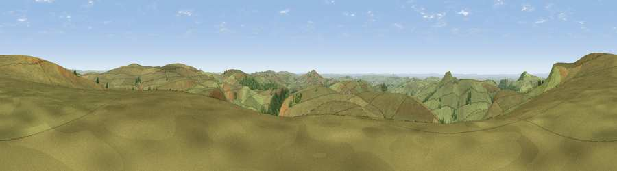

Viewpoint near Flash
#9466 in England · top 10% of its area beats it · near FlashThe view, rendered

A 360° render of this exact spot computed from the terrain model, tree cover and land cover — summer colours, afternoon light, calibrated against photographs of famous viewpoints. Real trees, hedges and buildings will differ in detail.
The panorama
Grey silhouette: terrain skyline in each direction (720 bearings, Earth curvature and refraction included). Dashed green: skyline with trees (+15 m) and buildings (+8 m) as obstacles. Blue strip: how far the ground is visible on each bearing.
Where the view opens
Wedge length = distance to the farthest visible ground on that bearing (vegetation-aware). Rings at 10, 25 and 50 km.
What fills the view
96% grassland · 3% woodland
Angular shares of the visible panorama (visual magnitude), not map area. Landscape diversity 0.08 (0–1 Shannon).
Key numbers
More beautiful places nearby
The staircase of upgrades: each row has a higher view potential than everything closer. Driving times are estimates from straight-line distance, calibrated against real road routing — check an actual route before setting out.
| Place | Direction | Drive | Score |
|---|---|---|---|
| Whetstone Ridge | NNW · 1 km | ~3 min | 68.8 |
| Viewpoint near Allgreave | W · 3 km | ~7 min | 72.0 |
| Shining Tor | NNW · 4 km | ~9 min | 72.7 |
| Viewpoint near Meerbrook | S · 6 km | ~13 min | 73.5 |
| Viewpoint near Timbersbrook | WSW · 12 km | ~22 min | 74.4 |
| Viewpoint near Mow Cop | SW · 19 km | ~32 min | 78.9 |
| Viewpoint near Mow Cop | SW · 19 km | ~33 min | 80.2 |
| Viewpoint near Harthill | WSW · 51 km | ~73 min | 80.5 |
53.22671, -1.99509 · source: screening · position refined by local search. Computed location — check access rights before visiting.